孖仔帮与您分享双胞胎育儿经
点击蓝字
关注我们
文|圆圈妈，一个文思如尿崩的双胎妈妈
趁着双十一购物节还有几天，赶紧把这个奶瓶选购的功课分享出来给大家。
前几天孖仔帮的#重磅互动#环节-----你希望圆圈妈写什么干货，收到一宝妈的求助，希望了解下奶瓶的选购攻略。
OK拉！如你们所愿。
今天这篇文章内容就是关于宝宝的奶瓶奶嘴和消毒方式。
其实，选奶瓶也是挺大工程的哈！别看奶瓶子小，这可不是一件简单活儿，不会比婴儿车婴儿床容易。
尤其是有选择综合征的宝爸宝妈，分分钟想砸电脑的节奏。
说说圆圈兄弟用过的奶瓶奶嘴。
圆圈出生到9个月前， NUK 品牌，玻璃宽口径，120ML+240ML两种容量各1套，购于淘宝。
9个月后， BABISIL品牌，PPSU材质宽口径，圆形240ML配奶嘴（喝奶用））+弧形120ML配吸管（喝水用），购于香港。
2岁开始， BABISIL品牌，PPSU材质宽口径，240ML配吸管，一直用到现在没有换过，购于淘宝。
说下BABISIL品牌的小插曲。
在香港买的，结果回到家撕开标签才发现是东莞制造的，活脱脱的“MADE IN CHINA”！
还以为是啥大品牌捡到宝了，心里嘲讽极了，对香港购物彻底嗤之以鼻。
最后找到家BABISIL品牌的淘宝店，一样的质量，价格便宜一半。
求圆圈妈的心理阴影面积...
奶瓶篇
玻璃、塑料、硅胶，选哪种材质？
我觉得新生儿用的东西必须是完美无瑕的，我毫不犹豫选了玻璃奶瓶，即便我知道像我这样粗线条的人，可能会摔碎无数个奶瓶，BUT SO HOW！
我就是对塑料材质有意见，总觉得有异味，尤其是我们打算把奶瓶丢到沸水中煮10分钟，担心长时间接触高温会释放有毒化学物质。
因此，不管品牌多么响亮，我已经先入为主了。
事实上，玻璃奶瓶透明度好，导热速度快，多冲几次奶粉就大概知道奶粉是否溶解，温度是否合适，大大提高了冲奶粉的速度。
你知道吗？圆圈哭着要奶的样子，比鬼哭狼嚎还要惊悚！
我恨不得来个巴拉巴拉小魔仙把自己变成配方奶塞到他们嘴里，只求两位老祖宗别哭了。
当然，这不现实。
我只能不断地在实践中加快冲奶粉的速度，到最后成功达到冲奶粉的最高境界----“快，准，狠”，及时满足他们的需求，玻璃奶瓶助力不小！
但是，玻璃奶瓶手感重，容易摔碎。我记得，我几乎每个月都要买奶瓶，摔一次100个大洋。
这也是为什么圆圈9个月后换了PPSU材质的奶瓶。
因为我真的摔奶瓶摔穷了！
容量80ml、120ml、125ml、160ml、200ml、240ml，怎么选？
奶瓶的容量因厂家品牌不同会有略微区别。
建议120ML装温水，240ML装母乳或配方奶，考虑到双胞胎宝宝容易早产，可以买80ML 容量的奶瓶。
但其实80ML 和120ML相差不大，我在很确定圆圈会早产的前提下，依然买了120ML的奶瓶。
因为120ML 可以一直用到1岁后都没关系，只需要换奶嘴即可。
10个月大左右，随着圆圈的精细动作的发展，我们给他们换上了带手柄的PPSU 奶瓶，他们可以自己抓着手柄拿着奶瓶喝，不需要大人抱着喂食。
我们终于可以在喂奶路上稍微歇口气了。
双胞胎宝宝的奶瓶准备多少个比较合适？
一般人均2套常用，即120ML装水+240ML装牛奶，如选了玻璃奶瓶，那每人再多备1套。
因为容易摔碎，以备不时之需。
有些坚决只喂母乳的宝妈会觉得不需要买奶瓶，亲喂即可。
是的，这是理想状态。
我说一个你不爱听但却既有可能发生的事情，双胞胎宝宝早产了怎么办？他们在新生儿科需要喝奶了怎么办？
亲喂是不可能的，只能挤了奶装进奶瓶送到医护人员手上，由他们喂给两宝宝喝。
因此，不管是配方奶还是喂母乳，都建议宝妈按照每人2套奶瓶先备着。
奶瓶的其他细节
★形状：
选圆形！其他形状如环形，弧形等因形状不规则都不好清洗，尤其是瓶壁底部和死角凹槽，奶渍长期堆积，容易滋生细菌。
★硬度：
选高硬度！质量差的奶瓶稍微使劲掐就会变形，很显然用料不足，质量不好，更不用说丢进沸水中煮沸了。还要看是否耐高温，因为需要经常消毒，不管是沸水还是蒸汽，都要求奶瓶耐高温。
★颜色：
选透明的！除非对颜色真的很执着，不然瓶身一律透明色即可。第一，可以更好地看到奶粉的溶解状态。第二，彩色奶瓶会让人有错觉，怀疑里面的奶怎么变颜色了呢？
★瓶身图案：
选简单的！部分宝妈非常讲究奶瓶的瓶身图案，力求赏心悦目，只为让宝宝爱上喝奶。
结果呢？瓶身好看了，刻度呢？刻度找了半天没找到，大大影响了冲奶粉的速度。
尤其是两宝宝平时是老人家在带的，瓶身除必要的刻度标示，越简单越好。
毕竟小宝宝喜不喜欢喝奶跟奶瓶图案真的没有多大关系。
奶嘴篇
奶嘴形状好多种怎么选？
我选NUK的一个重要原因是NUK 的奶嘴很特别，如图所示：
从图片上可看到，奶嘴是不规则形状的，舌头顶着的那一面是平的。
设计的人认为妈妈的乳头被宝宝含在嘴里吸奶的时候形状会变扁，按照这个理念设计出这种贴合宝宝的齿颚和牙龈形状的奶嘴，声称更有利于宝宝牙齿发育。
NUK家的奶瓶就选用了这种正牙奶嘴的设计，采用宽底模仿妈妈乳房形状的设计，更加贴近母乳亲喂形式，而且奶嘴上也有通气孔减少胀气问题。
据说这是配方奶喂养的双胞胎家庭的首选。
硅胶or乳胶，选哪个呢？
硅胶较硬，但耐用易清洗，乳胶较柔软，但会有点异味。
NUK家的扁平奶嘴有硅胶和乳胶两种材质
刚开始给圆圈用乳胶奶嘴，可是清洗过多遍，依然感觉有说不出来的异味。
而且他们长出牙齿之后就会经常咬破奶嘴，还把奶嘴碎片给吃进去了。
后面换了硅胶奶嘴，他们的牙齿力度有限，咬不破了，稍微好点，一般能坚持到1个月换一次奶嘴。
小贴士：在两宝宝出生前我们都不清楚他们的喜好，而且不知道母乳何时供应上，一个折中建议就是：两种材质的奶嘴都给两宝宝配2个以上。
奶嘴的S,M.,L,V都表示啥意思啊？
这些字母表示奶嘴的流速大小。
圆孔小号（S号）：一滴
圆孔中号（M号）：两滴
十字孔大号（L号）：三滴
十字孔变速（V号）：四滴
刚开始用S号即可，后面啥时候换孔径，就得凭自己的直觉了。
有些商家会给出使用建议，但那只是普遍性，我们还得实际参考两宝宝的吃奶情况。
如果吃着睡着了或者很用力地吃奶，那说明要换大孔径了。如果吃着呛奶，那说明孔径大了点，
这里再啰嗦下奶嘴孔径的重要性。
圆圈4个月左右，本可以喝210ML的，突然连120ML都吃不完，没有感冒发烧的症状，精神好得很，可是就是不肯喝，连续3天都如此。
也是巧合，我把已经被咬破的奶嘴换了个新的，因为S孔没有了，只好换M孔的。
结果150ML不出10分钟就被喝完了，我们又补了90ML，也很快喝完了。
研究了很久，恍然大悟，他们嫌弃奶嘴孔流速太慢吃不到奶，结果喝得很不爽，现在换个大一号的奶嘴就解决问题。
以上亲身经历得出结论，当两宝宝突然厌奶，排除身体疾病的情况下，看是否是奶嘴不合适导致的。
检查下是不是奶嘴孔径太小吃不到奶，是不是近期换了奶嘴品牌或者材质，他们对气味变化敏感而不爱喝奶的。
因此，奶嘴的重要性在一定程度上决定着两宝宝们喝奶的积极性！
清洗消毒篇
奶瓶奶嘴的清洗
双胞胎宝宝，意味着要喂两次奶，还要洗两次奶瓶，简单用温水冲洗是没有意义的，还得用专用的奶瓶刷和洗涤剂。
应该不会有人真的拿洗洁精去洗婴儿奶瓶的吧！
每次喝完奶，圆圈的奶瓶奶嘴都要用清水冲洗一遍，再用开水烫一遍，晚上再统一用沸水煮一遍。
每天如此！
这个清洗方式一直持续到他们满3个月后，隔天沸水煮一次，到最后7天才煮一次，再到1个月煮一次，到最后懒得煮了，因为锅都不见了！
奶瓶刷，建议用尼龙刷的，海绵款的泡沫很丰富，要冲洗很多遍才没有泡泡，而且不容易干，容易滋生细菌。
我用的是日康奶瓶刷套装，NUK 的洗涤剂。
煮沸消毒法OR蒸汽消毒法
我们选了很传统的煮沸消毒法，因为经济实惠，只需要一个大锅，烧开水，把清洗好的奶瓶奶嘴等配件丢进去煮沸5--8分钟左右即可。
虽然省钱，但杀菌不彻底且耗人力，需要有专人看着煮沸的水，手动操作。
坐月子期间，我曾经把奶瓶一直煮了将近30分钟，烧干了一个铁锅，所幸奶瓶质量超好，没有爆裂破碎，不然后果不敢设想。
别问我干嘛去了（躲在厕所睡着了…）
o(╥﹏╥)o
因此，不必在乎那点小钱，买个蒸汽消毒锅吧，蒸汽温度比沸水更高，杀菌消毒的效果更佳。
将所有的奶瓶、奶嘴、奶瓶盖等一起放入蒸锅，待消毒完毕可以自动断电。
简直一劳永逸，完美！
奶瓶品牌！
好吧，我知道有部分宝妈应该直接就拉到后面看奶瓶品牌了。
我真不喜欢干这事。
第一，怕有广告嫌疑，第二，我对品牌真的没有概念。
以下是潜水各大育儿论坛总结的几个较为普遍常用款的奶瓶品牌！
亲民，性比价高：
贝亲，日康，爱得利...
大品牌，高大上：
新安怡，NUK，布朗博士，苏维尼...
具体的品牌细节对比，大家各自回家继续做功课吧！o(╥﹏╥)o
孖仔帮有双胞胎爸爸专属群啦！
在此你们可以互相交流下初为人父的喜悦和已为人父的辛酸，还有你们男人间的家长里短…尽情唠嗑吧！
入群方式：＋圆圈妈的微信(sgguy-com)，我会发群聊邀请给你们。欢迎准爸爸的加入双胞胎育儿大家庭，一起分享双胞胎育儿经。
#重磅互动#
评论区聊一聊
你希望圆圈妈写什么干货？
随便提，万一下篇就写了呢？
END
本文系圆圈妈sgguy-com原创，来源于孖仔帮，专注双胞胎孕期育儿经验分享，著作权归孖仔帮所有。
212:原来双胎妈妈可以这样数胎动，好简单啊
215:双胎子宫日记系列|（下）你看不看？双胞胎妈妈直播剖腹产全过程
302:喂养干货||如何训练双胞胎宝宝睡整夜觉
306: 真人示范！双胞胎妈妈高难度喂母乳技巧
219双胞胎准爸爸的生存指南：不做猪一样的队友，活着出来喜当爹
220双胞胎准妈妈，其实你的产检方式一直搞错了…
222:看过这份最简单的双胞胎宝宝用品囤货清单，其他的都是将就
712：双十一囤货：我为什么不买并排式的双胞胎婴儿车，这篇文章有答案
304:家有双胞胎宝宝，这6个小贴士越早知道越好
305:双胞胎宝宝怎么睡？这样做既省钱又安全
303:干货||配方奶喂养的双胞胎宝宝囤货用品清单
309: 如何顺利度过双胞胎宝宝的第一年
710:双胎妈妈囤货建议||这6个育儿神器，吃土也要买
我猜你肯定喜欢看上面的文章，对不对嘛？关注孖仔帮，回复文章前面的数字编号即可阅读。
长按识别二维码关注我们
关于这个号
谢谢关注！我是圆圈妈
85后，全职双胎妈妈
家有孖仔男宝两枚，圆圈&圈圈
双胞胎育儿公众号：孖仔帮
旨意分享双胞胎育儿经验帮助双胞胎家庭
有经验可循
有组织可靠
希望我的经验对您有所启发
期待与您一起共享双胞胎育儿经
孖仔帮目前有4个微信社群
孕期群，喂养群，闲置群，双胞胎爸爸专属群，
如需入交流群，请+圆圈妈的微信号sgguy-com,或扫描下方二维码
由圆圈妈邀请入群
更多孖仔帮双胞胎原创育儿文章请猛戳 "阅读原文" 或者直接上圆圈妈的个人博客。
博客链接：https://www.sgguy.com/twinsbang

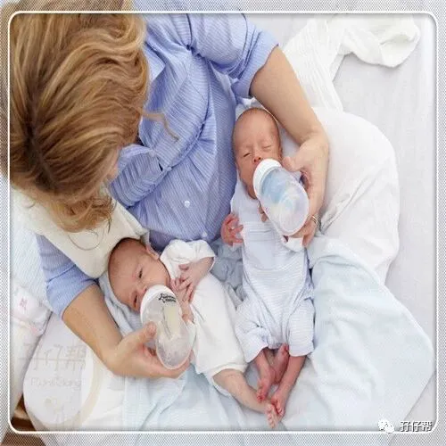
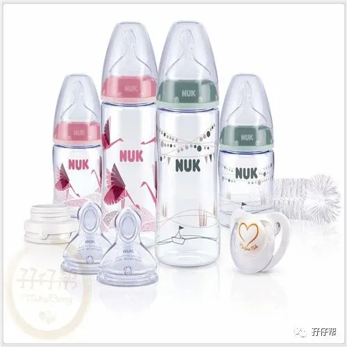

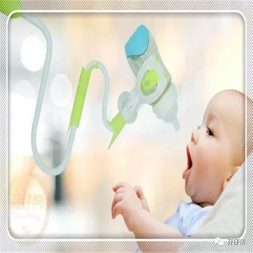
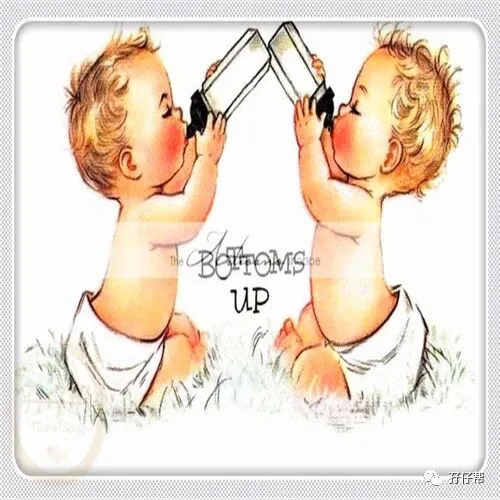
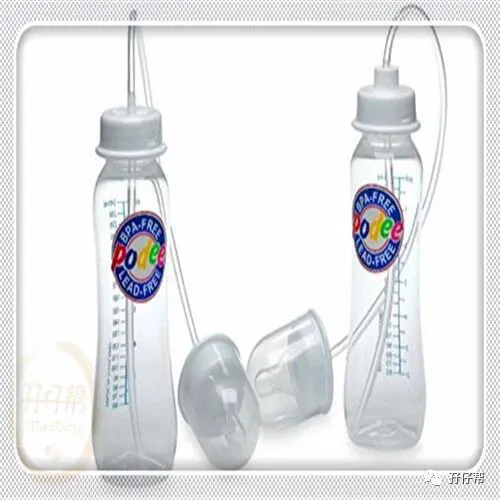
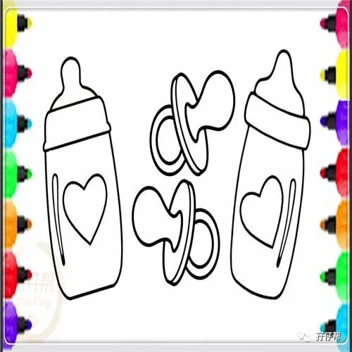
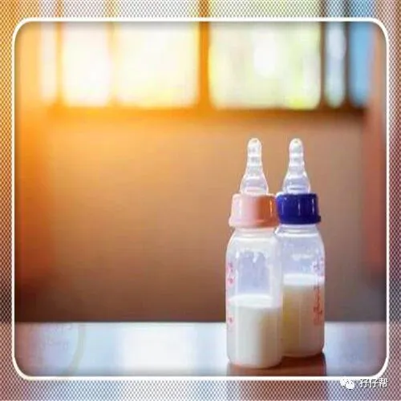
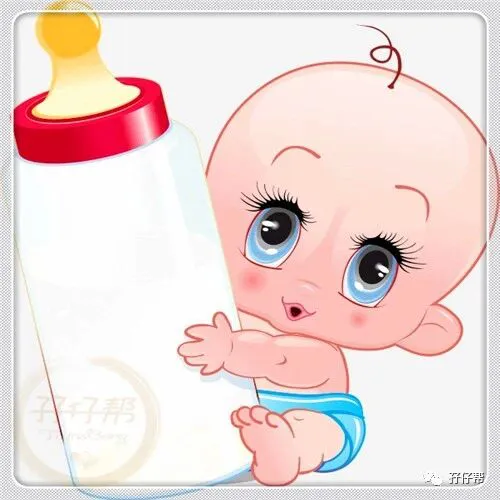
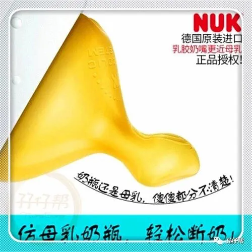
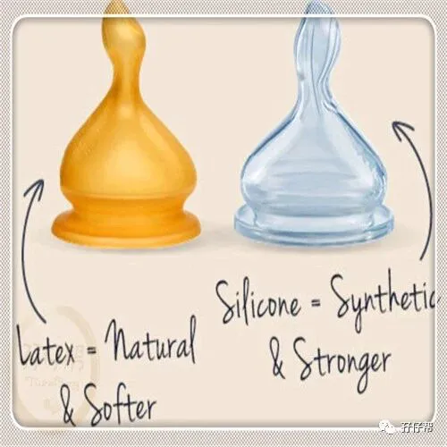
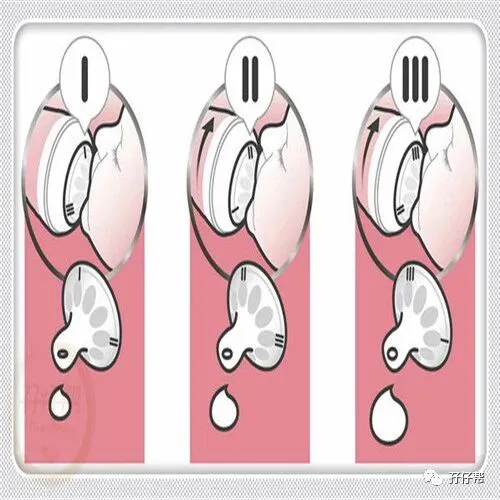
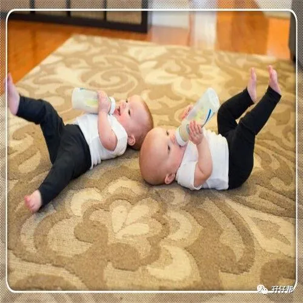
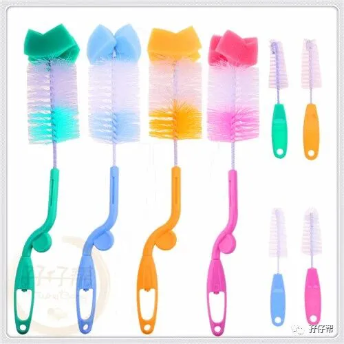
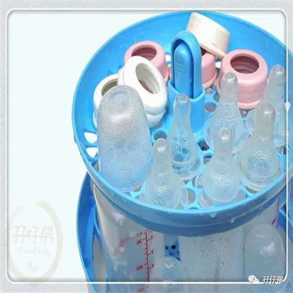
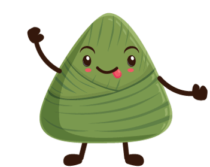
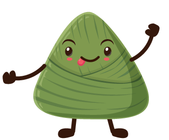
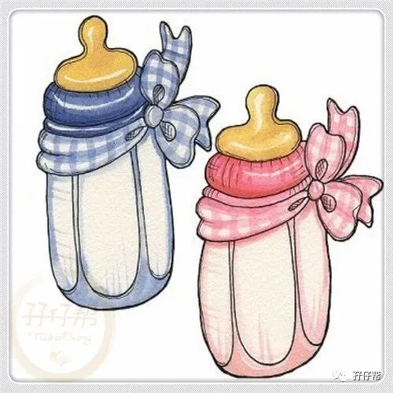
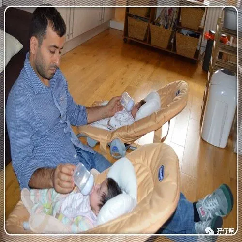